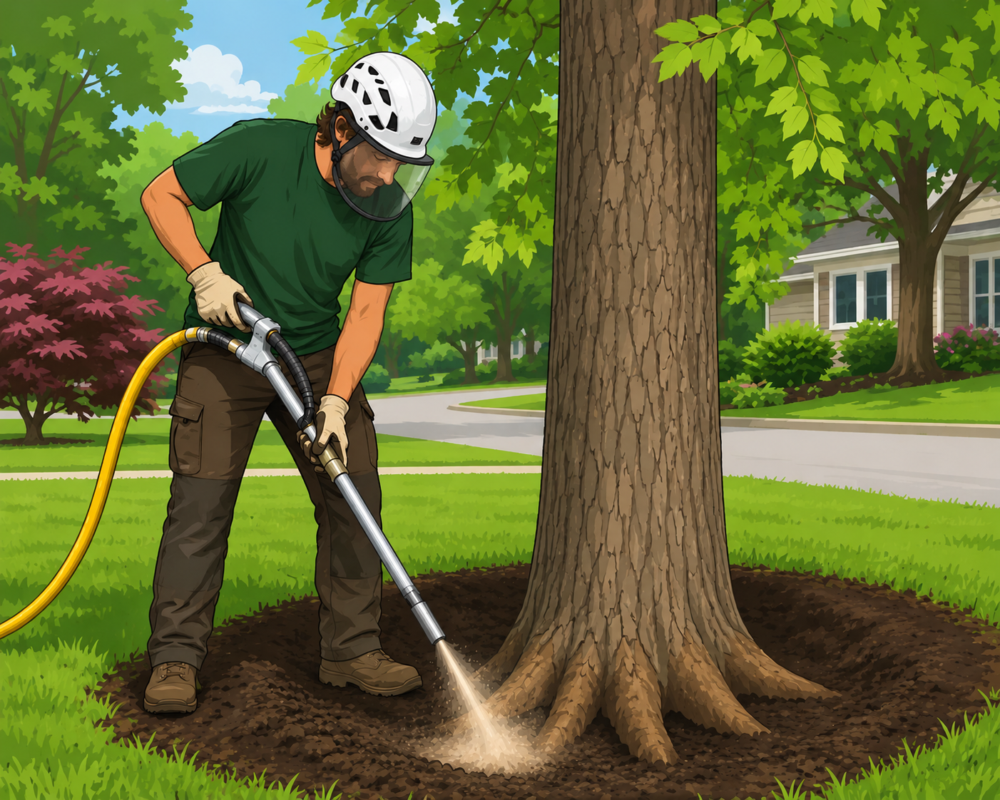
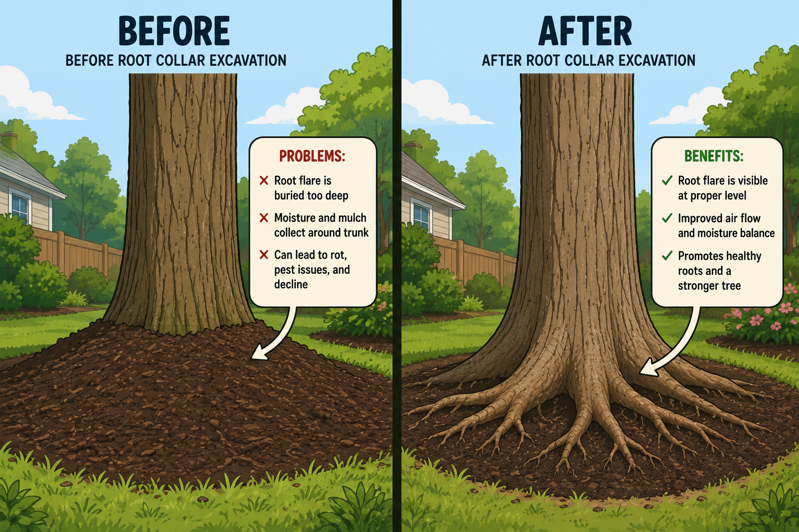

Air spading is a specialized process that uses compressed air to safely remove soil around a tree's roots without causing damage. Unlike traditional digging methods, air spading exposes roots while preserving their structure, allowing arborists to inspect the root system and address issues hidden below the surface.


Air spading is commonly used on valuable landscape trees showing signs of stress, poor growth, or decline, and can often improve tree vigor while reducing the risk of future health and stability issues.